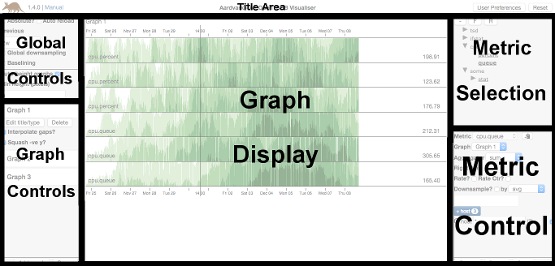
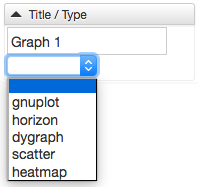
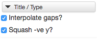
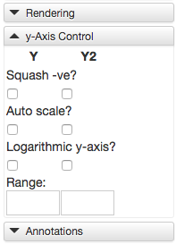
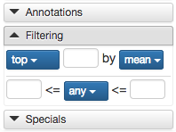
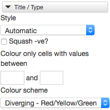
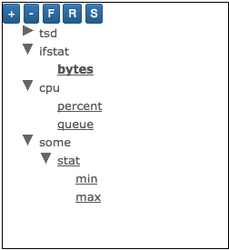
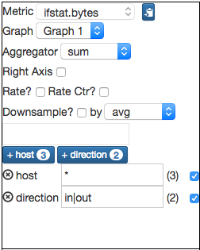

Aardvark User Guide
Aardvark is a general purpose visualiser for OpenTSDB. Its aim is to provide a simple yet rich user interface to explore time series data, however given the wealth of features available, some guidance is necessary in order to be able to get the best out of Aardvark.
Overview
The Aardvark user interface is split up into 6 main areas:

- Title area - Identifies version, link to (this) user guide, reset and user preferences
- Global control - Date/time selection, reloading, global downsampling
- Graph controls - Per graph settings
- Graph display - Graphs are rendered here
- Metric selection - Metric discovery, selection populates metric control
- Metric control - Selection of metric query parameters, mapping to graphs
Common concepts
Time periods
Various fields allow the specification of time periods. Aardvark uses the same shorthand format as OpenTSDB consisting of a number followed by a character:
- ms - milliseconds
- s - seconds
- m - minutes
- h - hours
- d - days
- w - weeks
- n - months - Not currently supported!
- y - years
Date/time formats
- Date - yyyy/mm/dd
- Time - HH:MM:SS
Title Area
Aside from providing a thin header, this provides access to reset the entire app to a blank status, and links to the manual and user preferences.
- Reset - Removes all metrics and graphs, adds back in a single graph with the default settings.
User Preferences
This dialog provides the ability to customize the Aardvark interface to your own tastes. Changes here are persisted in browser storage.
- Auto re-render on change - By default Aardvark only renders graphs when clicking Save within either the graph or metric controls or pressing the enter key whilst focus is on a field. However to provide a more dynamic interface you may select this option in order to render on change of any input on the screen.
Global Controls

These are controls which affect either the whole page, all graphs, or all metrics.
Date/time controls
Aardvark allows time to be specified as either relative or absolute.
When time is relative, then all you need provide is a period to look back over from now.
When time is absolute, then you must specify a date/time to begin and you may optionally specify a date/time to end (else now is used).
Aardvark also allows you to auto-reload (rerender) the graphs every entered time period.
Downsampling
By default, Aardvark permits downsampling to be specified on a per metric query basis, the global downsampling section allows forcible downsampling of all queries to the same period. The aggregator to be used is still specified by the metric query.
Baselining
Baselining allows the comparison of the time period being queried with an earlier period in time to allow comparisons to occur (typically after a change has been made). An extra timeseries will be added for each resulting timeseries from your queries with a [BL] suffix for renderers which support this (currently only dygraph).
The period is determined using a baselining style or method, which must be one of:
- Relative offset - calculates the start and end times of the baseline period by offsetting from the main time period start and end times (derived or specified)
- From date/time - the user specifies the start time of the baseline period and the end time is calculated by adding the time difference from the main time period
- To date/time - the user specifies the end time of the baseline period and the start time is calculated by adding the time difference from the main time period
Baselining may give odd results when combined with certain other graph options.
Graph height
If you have only one graph then this will be stretched to use up all the vertical space on the screen.
Once you have more than one, then you will be provided with more control over how the vertical space is used:
- Auto graph-height will ensure a minimum height for each graph and will distribute extra space to each
- Fixed graph-height will force the height of each graph to a specific value
Graph Controls
Aardvark supports rendering multiple graphs for the same time period, with the ability to change render engine, chart style and other options independently for each.
Graph management

Aardvark defaults to a single graph, the renderer for which can be defaulted via (configuration)[config.html].
New graphs can be added by clicking ‘Add graph’ at the bottom of the graph controls panel.
Individual graphs offer the opportunity to change the title, renderer and also to delete it.
Additions and deletions of graphs are not applied to the render view until ‘Save’ has been pressed, regardless of render mode. All other changes apply according to the render mode.
Gnuplot renderer

The gnuplot renderer uses OpenTSDB to render timeseries charts on the server and the controls available mirror those found on the default OpenTSDB user interface.
Horizon renderer

The horizon renderer uses Cubism from Square.io to render horizon charts, horizon charts are particularly useful for spotting event correlations across a large number of timeseries.
The horizon renderer allows you to exclude negative values from the plot and apply linear interpolation to gaps between points.
Dygraph renderer
The dygraph renderer uses Dygraph to provide client-side rendered time series charts with additional capabilities and flexibility over those provided by gnuplot.
Rendering controls

These options affect how time series are rendered. Some of these options may clash in unexpected ways, but full control is left to the user to mix and match as appropriate (unless otherwise noted).
- Gap interpolation - draws a line between known points for a time series when there is another time series displayed with a point between them (this is only a gap in the data if you expect both time series to emit data points at the same time and no deduping of data points is occurring). If gap interpolation is disabled then a gap is shown in the time series.
- Highlight lines - isn’t really a rendering option, but more an interaction option - if enabled then hovering the mouse over a time series will highlight it in bold, useful for when you have many time series and want to pick on out.
- Stacked lines - renders all time series on on top of the other, this includes baselines so mileage may vary there.
- Ratio graph - renders each line by plotting the ratio of its value to the sum of all time series’ values as a percentage at each point on the graph.
- Mean adjusted - plots each line as a positive or negative difference from the average of all time series on a point by point basis. Quite handy when combined with a ratio graph to see how load is distributed across a cluster. Incompatible with negative squashing.
y-Axis controls

The dygraph renderer supports both a left (Y) and right (Y2) axis and each can be individually controlled:
- Squash -ve - excludes negative points from the chart. Incompatible with mean adjusted charts.
- Auto scale - Scales timeseries to the same order of magnitude using the max absolute value from each unique metric name. Incompatible with logarithmic axes
- Logarithmic y-axis - plots points on a logarithmic scale (the default is linear). Incompatible with auto scaling.
- Range - in the format * [<min>:<max>] * (where the square brackets, <min> and <max> are all optional. Limits the rendered points to those within the range given (inclusive).
Annotations

The dygraph renderer supports annotation rendering:
- Annotations - enables retrieval and display of annotations attached to any time series being rendered.
- Global annotations - enables retrieval and display of any global annotations.
Filtering controls

Aardvark supports additional filtering of results received from OpenTSDB prior to rendering, allowing a reduction in the number of time series displayed, 2 ‘modes’ are supported, which are ANDed together to determine the final list of time series to be displayed:
- Count filtering - Includes either the top n or bottom n set of series, based on an aggregation of all the values in the series.
- Value filtering - Includes time series where points meet the value conditions you specify. These consider either every point in the series (in which case a single hit includes the series) or an aggregation of the series.
Scatter renderer

The scatter renderer uses Dygraph to plot metrics against each other, this is particularly useful for determining strength or manner of correlation.
The scatter renderer requires exactly 2 time series to be able to render and will show a point for a point in time where a value exists for both plotted series. If you have time series which don’t often have points at the same time you may find downsampling will help.
Control over the scatter renderer is currently limited to:
- Squash negatives - if a negative is found in either series’ value for a point then the point will be excluded.
- Swap axes - changes metric assignment between the 2 axes.
Heatmap renderer

The heatmap renderer uses D3 to render calendar based grids showing the magnitude of a timeseries over time, it is well suited to identifying recurring time-based events.
The heatmap renderer requires exactly 1 time series to be able to render.
The style of calendar grid is selectable between:
- Automatic - Selects week columns and day cells for periods over one year, day columns and hour cells otherwise
- Week columns, day cells - shows a row per year with months highlighted
- Day columns, hour cells - shows a grid per month
Filtering allows you to exclude values outside the selected range from the range of values included in the colour scheme, allowing you to see finer differences. Cells excluded by the filter are rendered in an off colour to distinguish from cells with no value.
The heatmap renderer also allows you to exclude negative values from the plot and to choose your colour scheme.
Graph Display
This area displays the rendered graphs. For most renderers it is possible to interact with the charts.
Gnuplot renderer
The gnuplot renderer doesn’t provide any opportunities for interaction with a chart.
Horizon renderer
The horizon renderer doesn’t provide any opportunities for interaction with a chart.
It will however show series’ values on hover along with a vertical bar allowing you to easily see correlations with other series.
Dygraph renderer
The dygraph renderer offers some basic controls to interact with your graph:
- Click and drag to zoom in either axis
- Hold down Alt, click and drag to move along the x-axis
Additionally, there are some extra capabilities around annotations:
- Hovering over an existing annotation will display it’s summary text
- Clicking an annotation will pop up a dialog allowing you to edit certain properties of the annotation
- Holding Ctrl (or Cmd on OSX) and clicking a point on a time series line will pop up a dialog allowing you to add an annotation
Scatter renderer
The scatter renderer uses the same chart library as the dygraph renderer and so offers the same interaction options:
- Click and drag to zoom in either axis
- Hold down Alt, click and drag to move along the x-axis
Heatmap renderer
The heatmap renderer doesn’t provide any opportunities for interaction with a chart.
It will however show cell values on hover.
Metric Selection

Aardvark allows selection of metrics to graph via a tree view which is constructed from the set of available metrics on your instance on OpenTSDB, splitting using the “.” character.
Select a metric to graph by selecting an underlined node, which may be present at any level (not just leaf nodes).
The tree may be filtered using a text search (press the F button to show the filter).
The tree may also be fully expanded (+ button - honouring filters) and fully collapsed (- button). A word of caution though - if you have a large tree this can lock your browser up, so it can be disabled via a config option (see the config reference).
If UI wide exclusions have been configured then the show (S) and hide (H) buttons allow you to include/exclude them from the tree. This is useful if you have old metrics or namespaces you no longer use in normal use.
Metric Controls

The metric controls allow you to customise the query performed for a metric and assign the resulting time series to a graph. If you wish you can assign queries to the special “None” graph, allowing interesting queries to be stored for later use. Almost all options found here mirror those found in OpenTSDB
- Aggregator - indicates what aggregation function to perform to when merging multiple underlying time series into a resulting series
- Right axis - plot results of this query on the right axis (only relevant for renderers support multiple axes)
- Rate - converts all of the time series for the metric to a rate of change value
- Rate Ctr - indicates that the metric graphed is a monotonically increasing counter
- Counter max - maximum value for the counter so that roll over is represented correctly (rather than as a negative rate)
- Counter reset - you can choose to set a reset value to replace values with a zero if the rate is greater than the value. To avoid negative spikes it’s generally save to set the rate counter with a reset value of 1
- Downsample - used to reduce the number of data points displayed on the graph. Use down sampling to reduce the number of points. Simply choose an aggregation function from the drop down list, then enter a time interval in the second box. The interval must follow the relative date format.
Additionally if more than one time series are known for a given metric you may add one or more tag queries. To do so, click on the tag you wish to query (the number in the badge is the number of unique values for this metric) which presents a tag row. This allows you to select whether to group by the values (only in TSDB 2.2 onwards) resulting from the query in addition to entering your query. If you specify multiple queries for a single tag these are ANDed together by OpenTSDB.